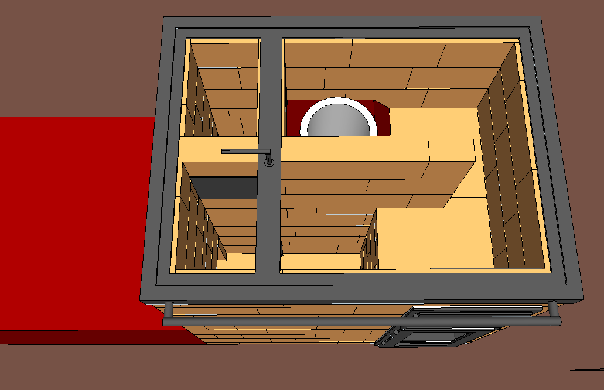

Les expériences en cours
Cette page regroupe des poêles expérimentaux que nous testons en ce moment. Avis aux pyromaniaques ! Nous ne fournissons aucune garantie sur le fonctionnement correct de ces poêles.
 Cuisinière maçonnée |
 |
 |
|---|
Cliquez sur une case pour voir la ficher du poêle correspondant.
Remarques générales
Licence :
Les plans que vous trouverez sur cette page et sur ce site sont distribués librement, sous une licence open-source CC BY-SA 4.0 : vous êtes libres de partager, d'utiliser, de transformer ce travail, même pour une utilisation commerciale tant que vous citez les auteurs originaux et que vous partagez les résultats de votre travail sous les mêmes conditions.
Cuisinière de 2500W
Malgré des apparences toutes simples, cette cuisinière est là pour tester un Batchrocket différent suite aux récentes expériences de Peter vd Berg.
Elle est aussi conçue dans l'optique d'être extensible : il est possible de construire cette cuisinière sans banc. Dans ce cas on profite tout de même d'une masse conséquente (650 kg environ) et d'un rendement correct.
Les différences par rapport à un Batchrocket classique :
- La cheminée interne est un tiers moins haute : 600 mm au lieu de 915 mm
- Il y a 23 cm au dessus de la cheminée interne, au lieu des 30 cm minimum recommandés
- Au lieu d'arriver dans une cloche, les gaz en sortie de la cheminée interne arrivent dans un petit volume où ils devraient normalement finir leur combustion
Pourquoi faire ça ? Une cheminée interne moins haute permettrait de faire des poêles moins haut, donc plus discrets esthétiquement. Cela permettrait aussi de faire des cuisinières maçonnées plus puissantes.

Vue 3D du poêle avec banc de chauffe.
Fiche technique :
- Puissance : 2500W avec 2 flambées par jour, mais peut sûrement aller au moins à 5000W avec 4 flambées par jour
- Poids (sans le banc de chauffe) : environ 650 kg
- Dimensions : 66x88 cm au sol et 89 cm de haut
- Version : 2
- Date de publication : 8 Novembre 2017
- Fichier Sketchup : batch165_sidewinder_cuisiniereV2_1.skp
- Débit :
Remarques :
Les expériences en cours menée par Peter vd Berg sont décrites sur le forum : http://donkey32.proboards.com/thread/2341/different-batch-core-riser-all?page=1
En vidéo :
Test d'un Batchrocket avec le port sur le dessus du foyer et sans cheminée interne. Source : Peter van den Berg, 2017.
Images :
-

- 
Vues 3D du poêle sans la plancha.